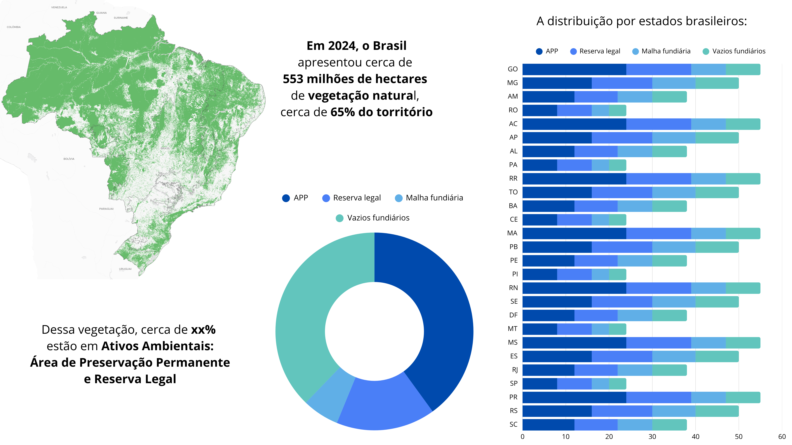
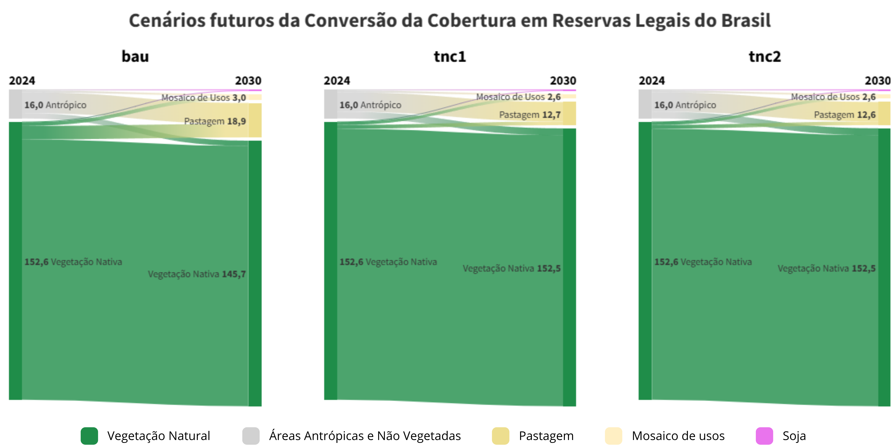

Estatísticas
Etapa final responsável por integrar os ativos ambientais à malha fundiária consolidada, resultando em uma base única que associa estrutura territorial, uso da terra e informações ambientais, permitindo análises em escala nacional.
Ativos Ambientais no Brasil

Cenários futuros nas Reservas Legais

Cenários futuros nas Áreas de Preservação Permanente